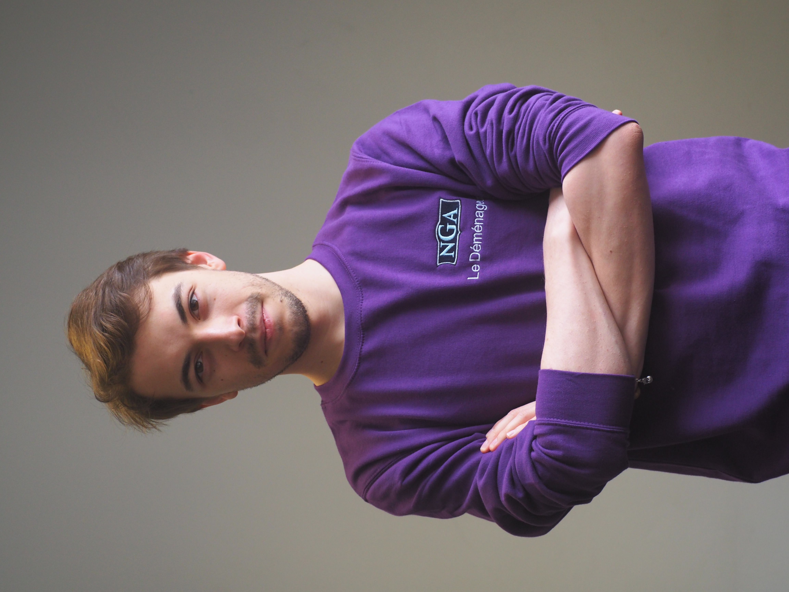

Gaultier
Jousselin
21 ans

Gaultier
Jousselin
21 ans
PROFIL
Etudiant en 1ère année du cycle
ingénieur à l’ECE Paris
CONTACT
+33 (0)6 79 60 99 26
1 route de saint nom,
78620 L'étang la ville
gaultier.jousselin@orange.fr
COMPETENCES
C / C++
HTML / CSS / PHP
Anglais
Espagnol
2018-2019
Première année du cycle ingénieur, débutée par un semestre universitaire à Edimbourg. Apprentissage des bases de l’intelligence artificielle, d’économie et de business. Expérience humaine riche de rencontres et de partages. Pratique approfondie de l’anglais. Découverte d’une nouvelle culture.
2017-2018
Deuxième année d’école d’ingénieurs du cycle préparatoire, année résolument théorique (Electromagnétique, Série de Fourier, C++, VHDL). Réalisation d’un projet en équipe (Application d’aide aux collocations). Stage d’observation de 6 semaines au sein de NoiseXT.
2016-2017
Première année d’école d’ingénieurs du cycle préparatoire, découverte de l’exigence des matières scientifiques (Optique, Probabilités, C, Electronique) et développement de mes capacités de pilotage au travers d’un Projet Scientifique et Technique en Equipe (réalisation d’un casque d’aide aux personnes malvoyantes).
2013-2016
Durant mes années de lycée j’ai choisi d’enrichir ce bac S par l’option de sciences de l’ingénieur. Cette matière m’a permis de me confronter au travail en groupe et d’apprécier les technologies et la découverte d’innovations par le biais d’études de systèmes.
Janvier 2018 – Février 2018
Initiation aux techniques avancées de traitement du signal. Approfondissement de techniques de travails en équipe. Expérience enrichissante et éclairante quant à de futurs choix d’étude ou choix professionnels.
Février 2012
Découverte avec intérêt du monde de l’entreprise et initiation à l’utilisation des logiciels de modélisation professionnels.
Innovation : Passionné, je m’informe régulièrement des nouveautés technologiques particulièrement en Intelligence Artificielle, en Automobile, en composants d’ordinateur ou en Aérospatiale.
Karting :Je pratique le karting et j’apprécie la compétition pendant les courses. J’essaye de toujours donner le meilleur de moi même pour mon équipe.
Montage : Depuis quelques années j’ai eu l’opportunité de monter quelques pc fixes. Cela m’a appris l’ingeniosité, m’a donné le goût pour l’innovation et le travail abouti.